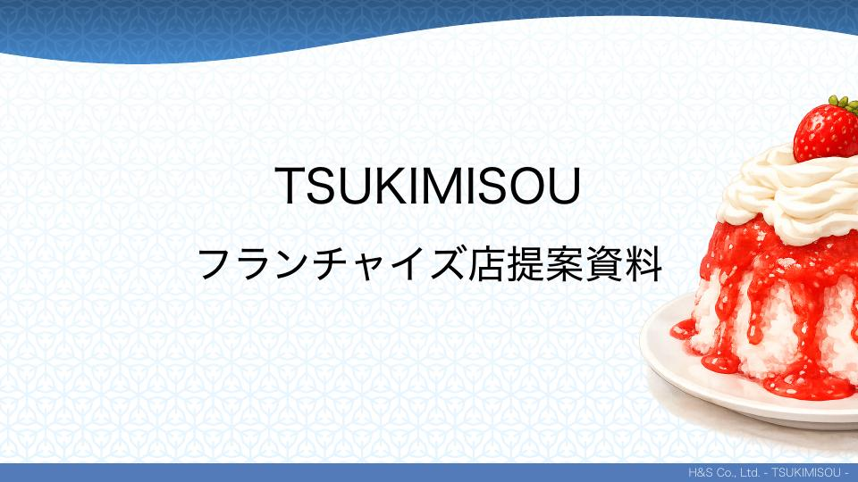
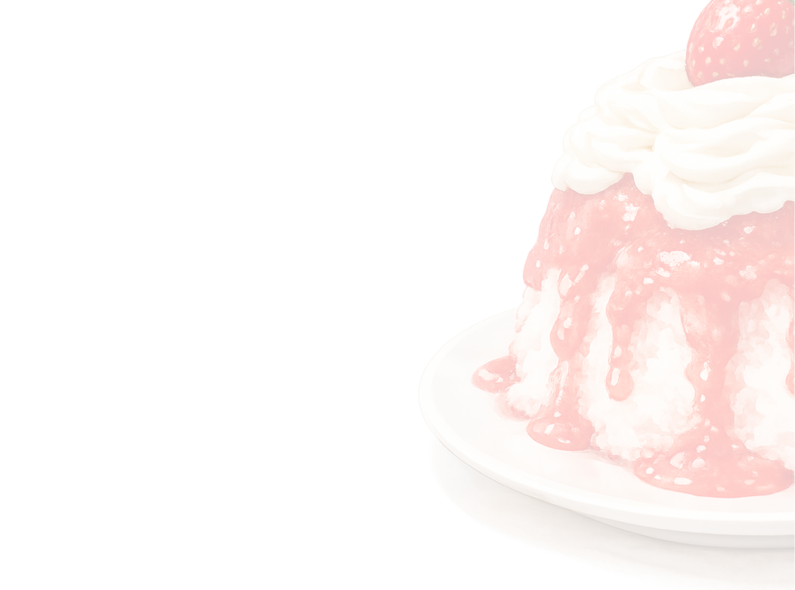
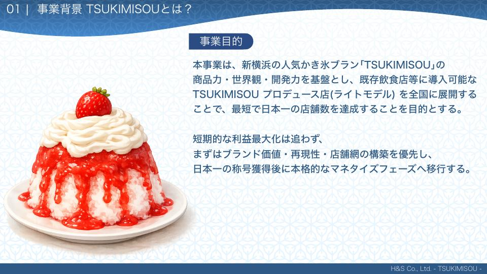
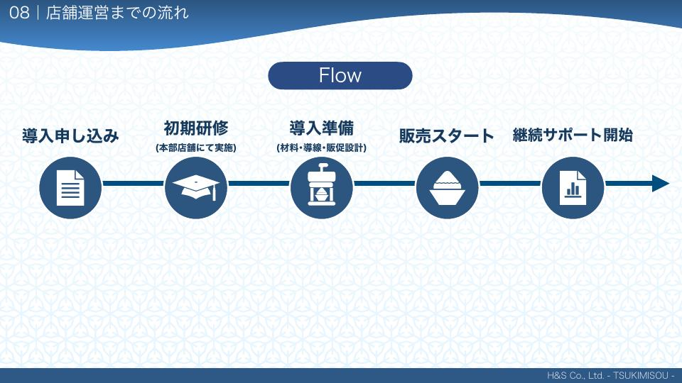
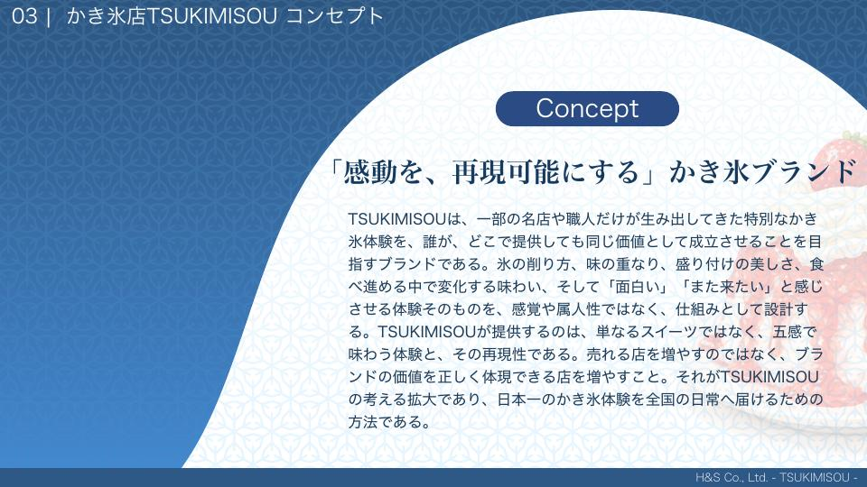

日本一の“かき氷体験”を、全国の日常へ。
名店だけの体験を、再現性ある仕組みで全国へ。立地・人材に依存せず同一品質・同一世界観を標準とし、店舗数日本一へ。規模だけでなく「均質に届く流通網」と「ブランドが日常に選ばれる状態」を意味する。
フランチャイズ店提案資料 · TSUKIMISOU プロデュース店（ライトモデル）
新横浜発の人気ブランド TSUKIMISOU。商品力・世界観・開発力を既存飲食店へ載せ、最短で日本一の店舗数を狙う前提の「ライト」導入です。
本ページは 提案資料PDF（2つの事業モデル・ストーリー）とライトシミュレーションシート（自主運営向け資金モデル）の両方を掲載します。前提が異なるため数字はセットで読み分けください。


本事業は、TSUKIMISOU プロデュース店（ライトモデル）を全国に広げ、最短で日本一の店舗数を達成することを目的とする。
短期的な利益最大化は追わず、まずブランド価値・再現性・店舗網の構築を優先。日本一の称号獲得後に、本格的なマネタイズフェーズへ移行する。
日本一の“かき氷体験”を、全国の日常へ。
名店だけの体験を、再現性ある仕組みで全国へ。立地・人材に依存せず同一品質・同一世界観を標準とし、店舗数日本一へ。規模だけでなく「均質に届く流通網」と「ブランドが日常に選ばれる状態」を意味する。
商品力と仕組みで、再現可能な感動を生み出し続ける。
レシピ・原価・盛り付け・世界観を一貫した仕組みとして整備。短期的に売れる店ではなく、ブランド価値を正しく体現できる店舗網を増やす。
「感動を、再現可能にする」かき氷ブランド
氷の削り方、味の重なり、盛り付けの美しさ、食べ進める中で変わる味わい——それを属人の感覚ではなく仕組みとして設計する。売れる店を増やすのではなく、ブランド価値を正しく体現できる店を増やすのが拡大の定義。

2026〜2028 の三層構造で、フェーズごとに打ち手が変わる想定です。
「再現性を証明する年」
ライトモデルの導入〜運営〜利益創出までの一連の型が完成。首都圏中心に3〜5店舗、既存飲食導入型に限定。成功・失敗をデータ化。
「店舗数を一気に取りにいく年」
初期費用・回収・月次利益が説明不要なレベルに。首都圏＋地方中核都市へ。10店舗 OPEN。「日本一の店舗数」を公式に打ち出す。
「量から質へ、次の成長軸」
店舗網を背景に TSUKIMISOU を文化・ブランドとして認知。本部は管理・監修・開発へ。15〜20店舗規模、企業・施設コラボ、海外 POPUP など。

PDF は「運営に入り方が違う2ライン」を定義しています。月次の試算シート（ライトプラン）で触れられている前提は、多くが自主運営型＝自分の店でプロデュース導入側のイメージです。
日々の運営・現場管理には関与しない。ブランドと仕組みへの投資。商品開発〜販促導線は本部。オーナーではなくブランドの成長に参画する立場。シートの試算モデルとは別軸の説明になります。
既存店に TSUKIMISOU の商品力・レシピ・世界観・仕組みを載せ自分で運営。属人性を抑えたオペ。下の「ライトプラン（シミュレーションシート）」の売上／経費・利益モデルとセットで読む前提です。
同じ TSUKIMISOU でも、提案スライド（PDF）と加盟シミュレーション（Googleシート）は金額が一致しません。契約検討時は両方見たうえで、本部提出の最新版に合わせてください。
0226_TSUKIMISOU資料.pdf — 「05｜事業資金」
本部資料のライト加盟シミュレーション表から転記した前提（リンクは掲載しません）。

上段は PDF に印刷されているラフ（約730／380／350）。中段は PDF の月次一覧を積み上げた厳密値。下段はライトシートの同一売上総額に対応するモデル結果です。
1月にブランド関連の更新¥330,000が載るタイプのモデルがあります（PDF一覧）。単月ではΔ ≈ ▲¥180,400（売上¥330,000 と経費総額のギャップ）となるイメージで、一覧表で実数を確認してください。
約5ヶ月
1月スタート想定の資料表記。ライトシート側の回収月数は別途（初期が¥165万になるため）シート上でご確認ください。
売上総額は PDF 明細と同じ ¥7,260,000 想定。経費項目の置き方が異なり、かき氷関連利益は￥372.9万／年（1〜2年目）。
月初の更新費計上で、単月マイナスの月が出るモデル（シート値・1月 ▼¥170,500）。
月間売上は ¥330,000〜¥990,000。年間売上合計 ¥7,260,000。
売上の形は PDF もシートも同系列。一方で経費線が違うため、かき氷関連利益の月額ピークは PDF で ¥492,800、ライトシートで ¥522,500（いずれも7〜8月想定）など差が出ます。